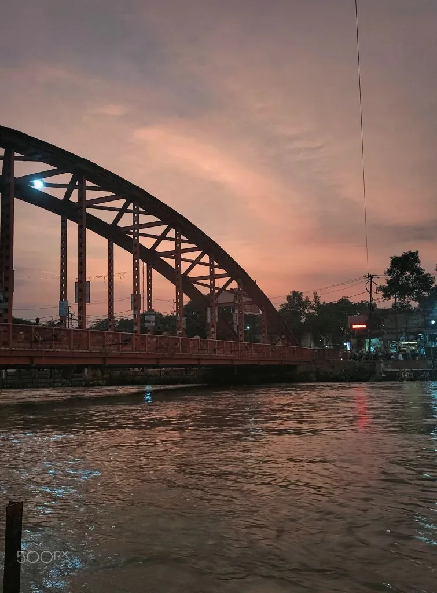

Beyond the research
Through My Lens
My work is about estimating what can't be seen directly. Photography is the opposite: noticing what is right in front of me. These are frames from campus walks in Kharagpur and Roorkee, and from trips to Delhi, Kolkata and beyond, on early mornings and slow evenings.


Selected Frames
A few favourites. Tap any photo to see it larger.
Scroll story
Frame by Frame
Main Building, IIT Kharagpur
Looking Up
Clean white lines against a deep blue sky. Sometimes the best angle is straight up.
Main Building, IIT Kharagpur
The Tower, Framed
The Main Building's tower peeking out from the leaves and clouds.
Takshashila, IIT Kharagpur
The Everyday Gate
The gate I walk through most days, under a canopy of yellow bloom.
Takshashila, IIT Kharagpur
Takshashila at Evening
The day winding down. A parked cycle and the last light on the walls.
IIT Kharagpur
Through the Branches
The sun slips behind the old trees that line the campus road.
Ganga Ghat, Roorkee
Sunset on the Ganga
Evening colours over the river, near a ghat of the Ganga.
Tata Sports Complex, IIT Kharagpur
Before the Lights Come On
Floodlights stand still while the last colour drains out of the sky.
IIT Kharagpur
Dusk Through the Window
Open window frames and a sky turning violet and pink as the day ends over the trees.
Keep scrolling


